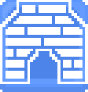

Technologies.
Here you will find all the information about the existing technologies in the game.
| name | icon | description | cost (in experience) | When is it active? |
| Craft board | Allows you to create a craftboard. | 10 | At any moment. | |
| Uncle hotbrick |  |
Allows you to create a furnace, bricks, building mortar, and metal tools. | 20 | After researching the 'Craft board' and after moving to the 2nd location or beyond. |
| MasterChef | Allows you to create a kettle and level 2 food in it. | 12 | After researching the 'Craft board' and after moving to the 2nd location or beyond. | |
| Mother’s Weaver | Allows you to create a loom. | 20 | After researching 'Uncle Hotbrick' and after moving to the 3rd location or beyond. | |
| Armorer | Allows you to craft gunpowder and ammunition. | 20 | After reaching level 4 and researching the ‘Uncle hotbrick’ technology. |